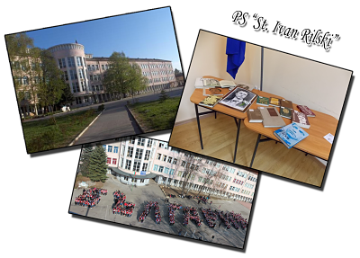

PS "St. Ivan Rilski"
|
 |
|
The primary school offered me different varieties of knowledge, starting from "Loving Nature", passing through "Literature", reaching "Mathematics" and "History". Different classes like "Physic", "Chemistry", "Biology" showed me the basics and prepared me for my high school application. Not only I had great experience in school, but the trips we had with my class teacher were great and gave me a lot of experience at an early age. How I miss that time... |